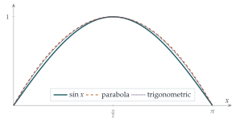

STEP II 2014, Question 2
Read the question before you go on. It is in the STEP Support Programme’s question database: step.maths.org/questions/14-s2-q2
The hook
Every school student knows that \(\pi\) is a little more than \(3\). How would you prove an upper bound for it? Archimedes did it with polygons. This question does it in a completely unexpected way: by taking a general inequality about functions, plugging in a simple parabola, and reading off \(\pi^2 \leq 10\). A different choice of function gives the famous approximation \(\pi \leq \frac{22}{7}\).
The inequality \((*)\) is Wirtinger’s inequality. It says that a function pinned to zero at both ends cannot be “big” without also being “steep”. Behind it lies one of the central ideas of mathematical physics: the vibrations of a string, the energy levels of a quantum particle, and the theory of eigenvalues.
Before you start
Why might a function that is zero at both ends of \([0, \pi]\) have to be steep if it is large in the middle? Why does the condition \(\mathrm{f}(0) = \mathrm{f}(\pi) = 0\) matter?
To get from \(0\) up to some height \(H\) and back down to \(0\) within a distance \(\pi\), a function must climb at an average rate of at least \(H/(\pi/2)\). So its derivative cannot be small everywhere. Without the condition at the ends there is no such constraint: a constant function can be as large as you like with zero derivative. The inequality \((*)\) makes this precise, measuring “size” and “steepness” by integrals of squares.
Working it through
Stage 1 Sine waves
What is \(\int_0^\pi \sin^2 nx\,\mathrm{d}x\)? And \(\int_0^\pi \cos^2 nx\,\mathrm{d}x\)? (Use \(\sin^2\theta = \frac12(1 - \cos 2\theta)\).)
Both are \(\frac\pi2\), since \(\int_0^\pi \cos 2nx\,\mathrm{d}x = 0\). With \(\mathrm{f}(x) = \sin nx\) we have \(\mathrm{f}'(x) = n\cos nx\), so \[\int_0^\pi \mathrm{f}^2 = \frac\pi2 \leq \frac{n^2\pi}{2} = \int_0^\pi (\mathrm{f}')^2,\] since \(n \geq 1\).■ Notice that \(n = 1\) gives equality, so the inequality is as tight as it could be.
Stage 2 The end conditions matter
Find a simple function with \(\mathrm{f}(0) \neq 0\) for which \((*)\) fails. Then find one with \(\mathrm{f}(0) = 0\) but \(\mathrm{f}(\pi) \neq 0\).
The constant function \(\mathrm{f}(x) = 1\) has \(\mathrm{f}(0) = 1 \neq 0\), and \(\int_0^\pi 1\,\mathrm{d}x = \pi > 0 = \int_0^\pi 0\,\mathrm{d}x\).
For the second, \(\mathrm{f}(x) = x\) has \(\mathrm{f}(0) = 0\) but \(\mathrm{f}(\pi) = \pi\), and \[\int_0^\pi x^2\,\mathrm{d}x = \frac{\pi^3}{3} \approx 10.3 > \pi = \int_0^\pi 1^2\,\mathrm{d}x.\] So \((*)\) fails in both cases.■
Stage 3 A parabola
Which quadratic vanishes at \(x = 0\) and \(x = \pi\)? (Up to a constant multiple, there is only one. Why doesn’t the multiple matter?)
The quadratic must be a multiple of \(x(\pi - x)\), and multiplying \(\mathrm{f}\) by a constant \(k\) multiplies both sides of \((*)\) by \(k^2\), so we may take \(\mathrm{f}(x) = x(\pi - x)\), that is, \(a = -1\), \(b = \pi\), \(c = 0\). Then \(\mathrm{f}'(x) = \pi - 2x\), and with the substitution \(u = x - \frac\pi2\) (which makes both integrands even), \[\begin{aligned} \int_0^\pi x^2(\pi - x)^2\,\mathrm{d}x &= \int_{-\pi/2}^{\pi/2} \left( \frac{\pi^2}{4} - u^2 \right)^2 \mathrm{d}u = \frac{\pi^5}{30}, \\ \int_0^\pi (\pi - 2x)^2\,\mathrm{d}x &= \int_{-\pi/2}^{\pi/2} 4u^2\,\mathrm{d}u = \frac{\pi^3}{3}. \end{aligned}\] (For the first: \(\int_{-h}^{h}(h^2 - u^2)^2\,\mathrm{d}u = 2\bigl(h^5 - \frac23 h^5 + \frac15 h^5\bigr) = \frac{16}{15}h^5\) with \(h = \frac\pi2\).) So \((*)\) says \(\frac{\pi^5}{30} \leq \frac{\pi^3}{3}\), that is, \[\pi^2 \leq 10. \qed\]
Stage 4 A trigonometric choice
For \(\mathrm{f}(x) = p\sin\frac12 x + q\cos\frac12 x + r\), what conditions do \(\mathrm{f}(0) = 0\) and \(\mathrm{f}(\pi) = 0\) impose on \(p\), \(q\), \(r\)?
\(\mathrm{f}(0) = q + r = 0\) and \(\mathrm{f}(\pi) = p + r = 0\). So \(p = q = -r\), and scaling, we take \(\mathrm{f}(x) = \sin\frac x2 + \cos\frac x2 - 1\).
Compute \(\int_0^\pi \mathrm{f}^2\) and \(\int_0^\pi (\mathrm{f}')^2\) for this function. What inequality for \(\pi\) results?
Write \(s = \sin\frac x2\) and \(c = \cos\frac x2\). Then \((s + c)^2 = 1 + 2sc = 1 + \sin x\), so \[\mathrm{f}^2 = (s + c)^2 - 2(s + c) + 1 = 2 + \sin x - 2\sin\tfrac x2 - 2\cos\tfrac x2.\] Using \(\int_0^\pi \sin x = 2\), \(\int_0^\pi \sin\frac x2 = 2\) and \(\int_0^\pi \cos\frac x2 = 2\), \[\int_0^\pi \mathrm{f}^2\,\mathrm{d}x = 2\pi + 2 - 4 - 4 = 2\pi - 6.\] And \(\mathrm{f}' = \frac12(c - s)\), so \((\mathrm{f}')^2 = \frac14(1 - \sin x)\) and \(\int_0^\pi (\mathrm{f}')^2\,\mathrm{d}x = \frac14(\pi - 2)\). Now \((*)\) gives \[2\pi - 6 \leq \frac{\pi - 2}{4} \quad\Longrightarrow\quad 8\pi - 24 \leq \pi - 2 \quad\Longrightarrow\quad \pi \leq \frac{22}{7}. \qed\]
Stage 5 Which is better?
From \(\pi \leq \frac{22}{7}\) we get \(\pi^2 \leq \frac{484}{49} \approx 9.878\), which is better than \(\pi^2 \leq 10\). (The true value is \(\pi^2 \approx 9.870\).) Notice that this proves \(\frac{22}{7}\) is an upper bound for \(\pi\); a quite different integral, in Section 4.3, shows that it is not equal to \(\pi\).
Looking back
A general inequality, a specific function. Choosing a test function turned a statement about all functions into a statement about a number.
Scaling. Both sides of \((*)\) scale by the same factor, so we could fix the free constant in each family.
Better test functions give better bounds. The closer the test function is to the extreme case \(\sin x\), the closer the inequality is to equality, and the better the estimate (Figure 3.7.1).

What’s really going on
Why is \((*)\) true? At university you will learn that any reasonable function on \([0, \pi]\) that vanishes at both ends can be written as a Fourier sine series, \[\mathrm{f}(x) = b_1\sin x + b_2\sin 2x + b_3\sin 3x + \cdots.\] Because \(\int_0^\pi \sin mx\sin nx\,\mathrm{d}x = 0\) for \(m \neq n\), all the cross terms vanish when you square and integrate, giving \[\int_0^\pi \mathrm{f}^2 = \frac\pi2\bigl(b_1^2 + b_2^2 + b_3^2 + \cdots\bigr), \qquad \int_0^\pi (\mathrm{f}')^2 = \frac\pi2\bigl(1^2 b_1^2 + 2^2 b_2^2 + 3^2 b_3^2 + \cdots\bigr).\] Each term on the right is at least the corresponding term on the left, which proves \((*)\), and shows that equality holds only when \(\mathrm{f}\) is a multiple of \(\sin x\). Part (i) of the question is the single-term case.
Vibrating strings and quantum particles
The ratio \(\int (\mathrm{f}')^2 \big/ \int \mathrm{f}^2\) is called a Rayleigh quotient, and \((*)\) says its smallest possible value, for functions pinned at \(0\) and \(\pi\), is \(1\). This number has physical meaning. For a string fixed at both ends, \(\int (\mathrm{f}')^2\) measures the stretching energy and \(\int \mathrm{f}^2\) the size of the displacement, and the minimum value of the ratio determines the lowest note the string can play. In quantum mechanics, the same minimum is the lowest energy of a particle trapped in a box: it cannot be zero, because a wave pinned at both ends must bend. Lord Rayleigh used exactly this trick, guessing a test function and computing the ratio, to estimate the frequencies of vibrating systems; because the extreme case gives the minimum, any guess gives an upper bound on the true lowest frequency, and good guesses give very accurate ones.
The calculus of variations
Finding the function that minimises a ratio of integrals is a problem in the calculus of variations, where the unknown is a whole function rather than a number. The minimiser here, \(\sin x\), satisfies the differential equation \(\mathrm{f}'' + \mathrm{f} = 0\), and this is no coincidence: minimising an integral always leads to a differential equation for the minimiser. We return to this idea in Section 4.7.
The thinking skill
An inequality that holds for every function in a class can be applied to a cleverly chosen function to give information about a specific number.
The art is in the choice: a test function close to the extreme case gives a nearly sharp result. This idea runs through analysis, physics and engineering, from estimating eigenvalues to the finite element method.
Try this next
A quartic. Use \(\mathrm{f}(x) = x^2(\pi - x)^2\) in \((*)\). Show that it gives only \(\pi^2 \leq 12\). Why is this test function worse than the parabola? (Compare its shape with \(\sin x\).)
Two sine waves. Check \((*)\) directly for \(\mathrm{f}(x) = \sin x + \sin 2x\), computing both sides.
A different interval. Show by a substitution that if \(\mathrm{g}(0) = \mathrm{g}(L) = 0\) then \(\displaystyle\int_0^L \mathrm{g}^2 \leq \frac{L^2}{\pi^2}\int_0^L (\mathrm{g}')^2\). What does this say about strings of different lengths?
Rayleigh’s method. harder Take \(\mathrm{f}(x) = x(\pi - x) + \lambda x^2(\pi - x)^2\) and choose \(\lambda\) to make the bound on \(\pi^2\) as good as possible. (The algebra is heavy; a computer algebra system helps.)
Further reading
T. W. Körner, Fourier Analysis (Cambridge University Press). A wonderful, discursive book on Fourier series and their applications, written by a Cambridge analyst.
Hardy, Littlewood & Pólya, Inequalities (Cambridge University Press). Chapter 7 discusses Wirtinger’s inequality and its relatives.
Richard Feynman, The Feynman Lectures on Physics, Volume II, Chapter 19 (“The principle of least action”). Feynman’s lecture on minimising integrals, with physical intuition throughout. Free online.